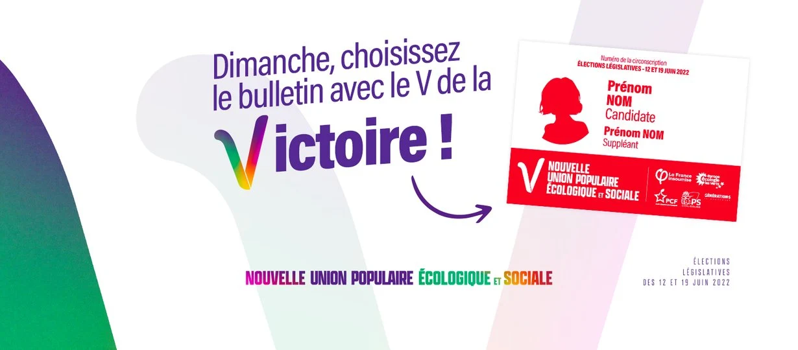

Publication d’archives
Dimanche 12 juin, le choix est simple :
Date indiquée par Facebook · 10 juin 2022
Texte conservé avec la publication
Contexte du dossier
Le 2 juin, le PCF des Deux-Sèvres explicite ses raisons de voter NUPES. Il combat les mégabassines, la privatisation de l’eau et le modèle agricole dépendant des logiques financières. Il défend des projets de territoire, des économies d’eau, des productions de proximité et un service public démocratique. Le même texte demande des moyens pour les collectivités et des pôles publics dans les transports, l’énergie, le médicament, le logement ou la culture.
L’entrée mise à jour le 9 juin met l’hôpital au premier plan : arrêter les suppressions de lits, recruter et réhumaniser le soin. Celui du 10 oppose aux politiques macronistes l’espoir de « réformes heureuses ». Ces appels ne valent pas constat d’une transformation réalisée. Ils montrent ce que la coalition est chargée de rendre possible dans le quotidien.

Sources
Archive rouge · export Facebook · AR-0002-FB-01878
À lire aussi · Septembre 2022 : le débat public ne se décrète pas d’en haut